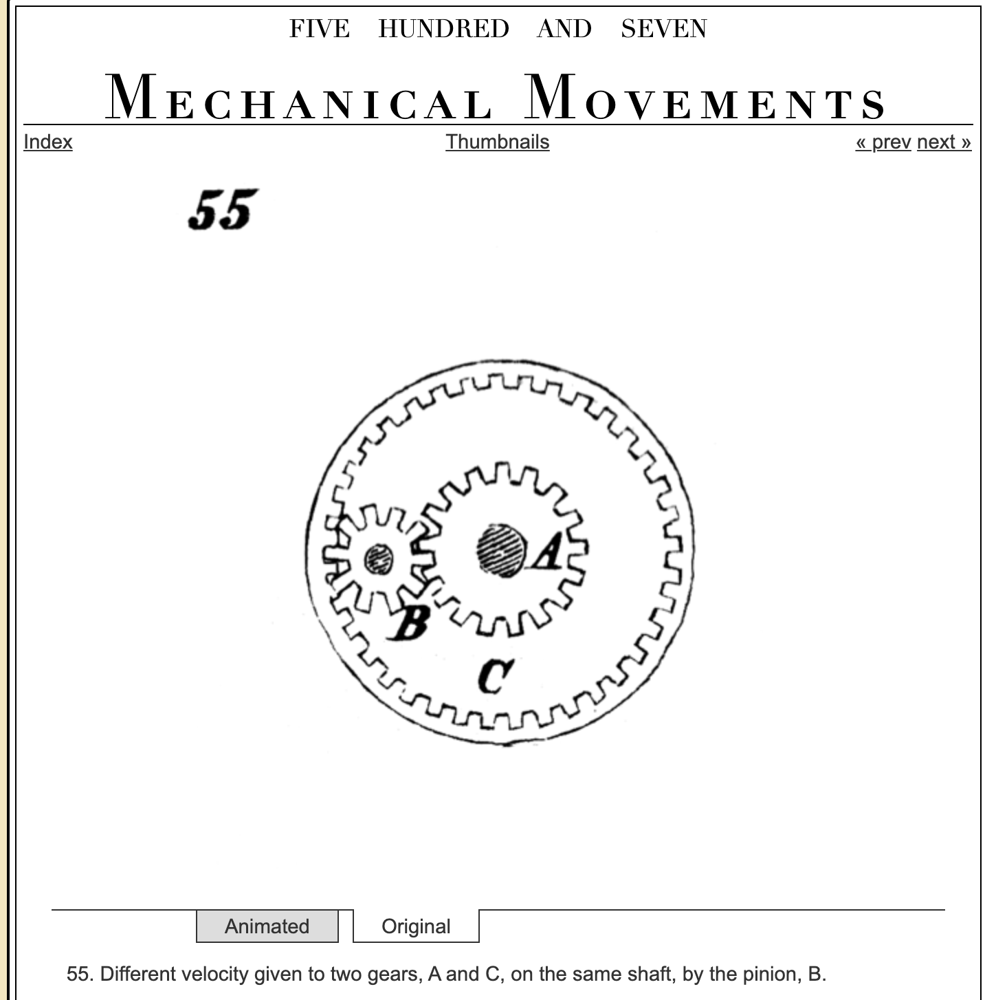
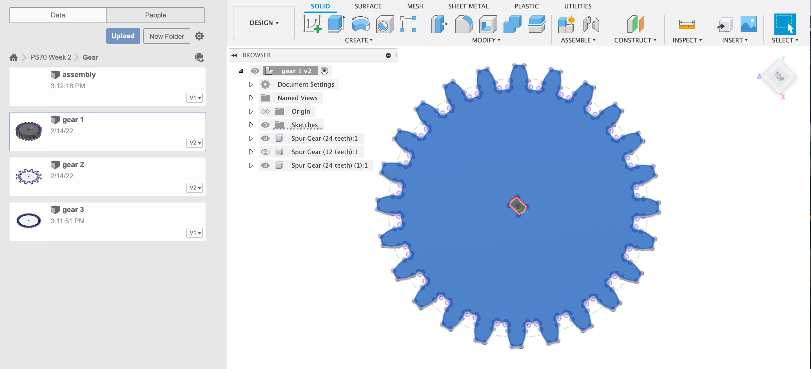
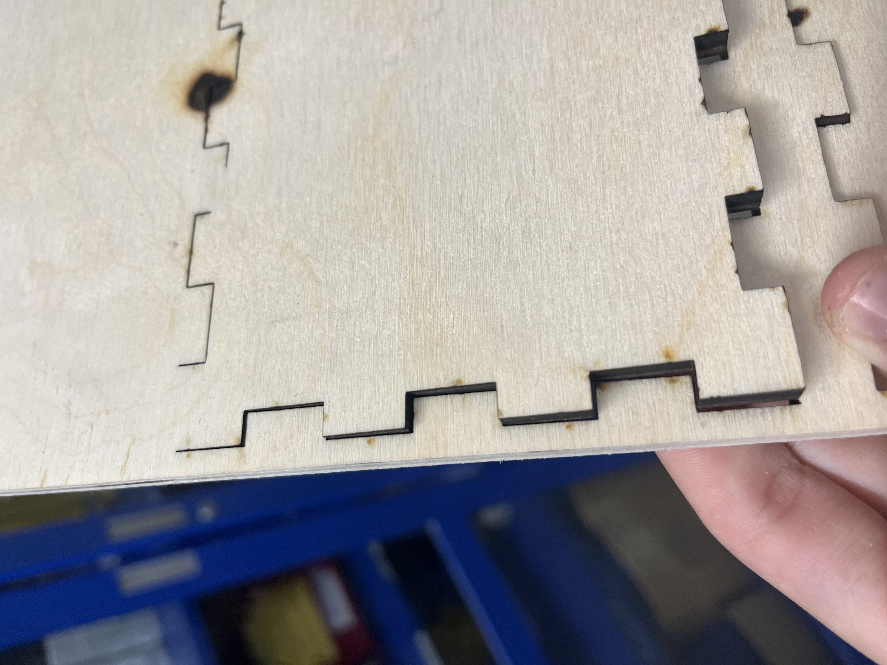
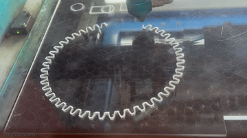
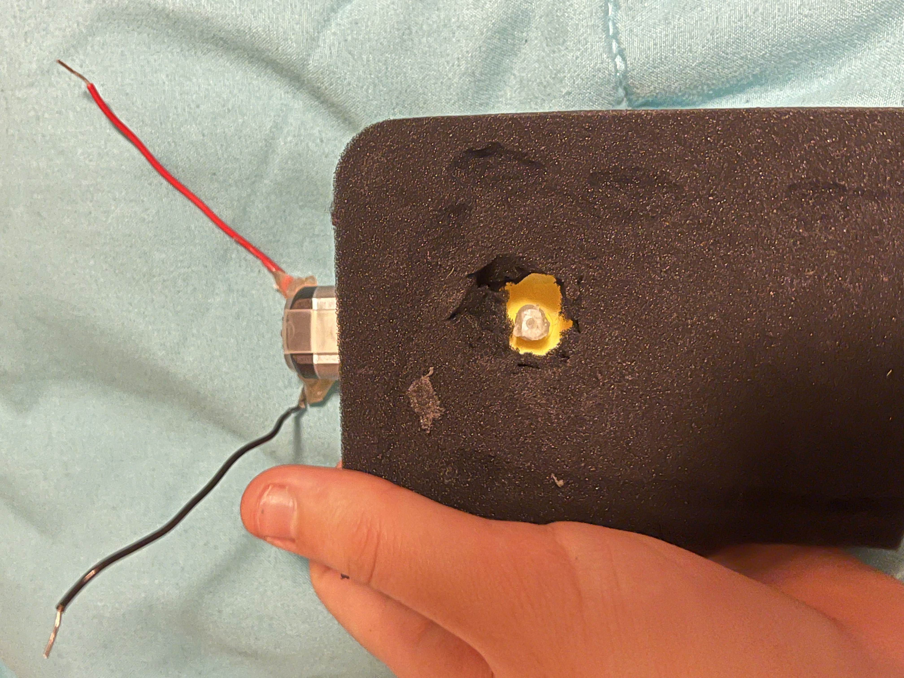
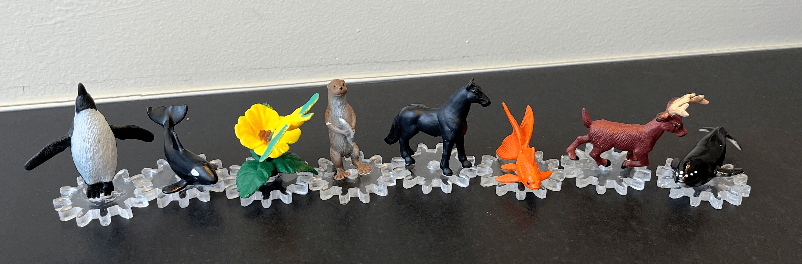

<div class="container-fluid">
<h3 style="text-align: center;"> Week 3: Hand tools and fabrication </h3>
<h4 style="color: black;background-color:#6EDCF7;"> Kinetic Sculpture </h4>
<p> This week’s assignment was to create a kinetic sculpture and I was a bit overwhelmed at first by the thought of designing gears or any moving mechanism from scratch. After watching and reading a lot about mechanical design, I still found the multitude of options and methods to be a bit daunting <a href="http://507movements.com">(e.g. 507 mechanical movements)</a> so I decided to just choose a movement pattern I could easily visualize and then try to replicate it. For some reason my mind went to the <a href="https://www.youtube.com/watch?v=TEg5VnjUZIw">Disney teacup ride</a> so that is what I went with! I later learned that this is called a planetary gear system but because I did not realize that, I worked harder not smarter and spent a while figuring out how to make this movement pattern on my own. Once I figured out what I needed to make, I watched some helpful tutorials and used the script in Fusion 360 to automate my gear design process. This was very magical and I was able to quite quickly make the 3 kinds of gears I needed: the outside ring (48 teeth), the larger inside gear that would be attached to the motor (24 teeth) and the smaller gears in between that would move and carry the sculpture element of my kinetic sculpture (12 teeth).
</p>
<p><img src=../03/cardboardgears.jpg alt="Cardboard Gears" style="float:left;width:280px;height:auto;">I started with cardboard to make sure my sizing was correct and that the gears had enough backlash to move cleanly. After a few small adjustments I had a functioning set of gears! But because the cardboard had a tendency to get stuck and overall wasn’t the sturdiest material for gears, I decided to cut them again out of acrylic. This was my first time working with acrylic but after a few test cuts to get the speed and power settings right, I was happy with the results. </p>
<p>My next task was to figure out how to attach the motor to my center gear. I wanted the final product to hide all the wires and motors and such, so I decided to make a box. Using the <a href="https://boxdesigner.connectionlab.org/"> box designer </a> a classmate mentioned last week, I set about making a wooden box. I made sure to add a cutout on one of the sides for cabling to run through. I ran into some mysterious trouble with the laser cutter where parts of the wood would cut through perfectly while other lines seemed completely untouched (see picture to the right). After triple checking my files, I couldn’t find actual missing lines, so I painstakingly lined up the origin so I could cut on top of my first attempt (I didn’t want to waste material by starting over!) </p>
<center></center>
<img src="../03/SpinningTest1.gif" alt="Spinnning Test" style="float:left;width:250px;height:auto;"><p>Now that my gears and box were ready, I needed to attach the motor to my center gear. I measured the spinning part of the motor with a caliper and did a test laser cut. It fit on the motor but was a bit too loose, so I offset my original dimensions by 0.3mm. This was too small, so I tried 0.1mm. To not waste material, I just kept cutting a new hole on the same piece of acrylic - this allowed me to do many tests until I found the perfect size. I wanted to make sure the back side of the motor didn’t accidentally get caught on anything that would interrupt the movement, so I cut a circle out of a piece of foam and glued it to the bottom of the motor. Next, I drilled a hole through the center of the box lid so that I could insert the motor and attach the gear (I drilled an increasingly larger hole to make sure the motor could rotate freely.) From there I needed to attach the motor to the underside of the box lid, but I didn’t want to permanently sacrifice the motor to this project, so I just used tape so it would be removable. We had already soldered wires to the motor in class, so I connected the wires to 5v and ground on my microcontroller and plugged the microcontroller into my laptop for power. After the finishing touches of gluing down the outer gear, I plugged it in and it began to spin! </p>

<p>Now came the fun part: choosing what to actually put on the gears. I was originally going to try to make mini teacups to truly replicate the ride that inspired my project, but that seemed unnecessarily difficult for mediocre results. I decided to focus on building the mechanism and let inspiration strike at the end. And as I searched through my room for inspiration, it certainly struck. I found some tiny animal figurines that I inexplicably bought at a zoo about a year ago. They were perfect - I super glued them onto the gears and after many glued fingers and accidentally gluing things to my desk, my project was ready! </p>
<center><video width="300" height="auto" controls>
<source src="Zoo.mp4#t=4" type="video/mp4">Your browser does not support the video tag.</video></center>
<p> While I loved the hilarious speed of my kinetic sculpture, I do think it would be helpful if I had slightly more control over the speed. I tried to use a potentiometer to control the speed, but I learned that at this level, the potentiometer acts more as an on/off switch and the amount the speed could change was quite limited. Instead, I decided to try programming the potentiometer to control the direction of the motor. After help from Nathan and Kalos, we were able to get it working and now I can control the direction and slightly change the speed of my carousel using the potentiometer.
<center><img src="../03/potentiometer.gif" alt="Potentiometer Control" style="float:left;width:200px;height:auto;"><video width="200" height="auto" controls>
<source src="potentiometerzoo.mp4" type="video/mp4">Your browser does not support the video tag.</video></center>